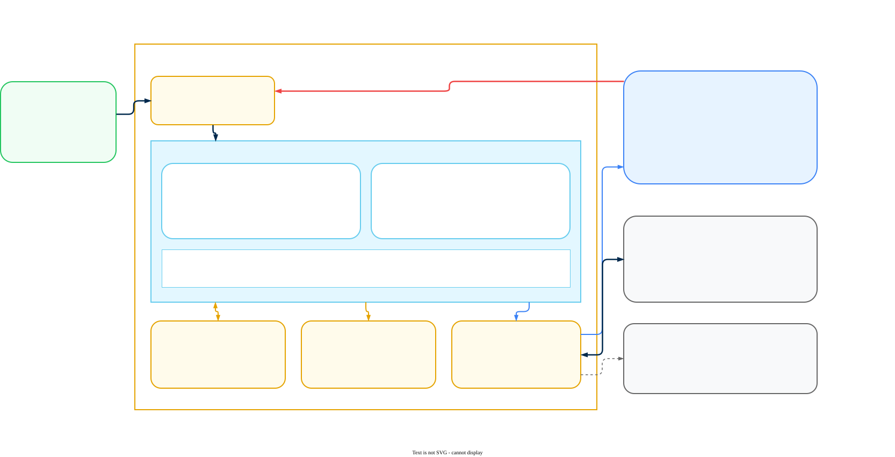

AI Gateway Hybrid Infrastructure
Plan, size, and prepare the infrastructure for a Prisma AIRS AI Gateway hybrid data plane on EKS, AKS, GKE, ECS, or Azure Container Apps, covering the two-plane architecture, component inventory, published sizing, connectivity in both directions, and per-platform prerequisites
This is a companion to the AI Gateway Deployment Guide. It covers only the infrastructure a hybrid data plane needs: what runs in your environment, how big it has to be, what it talks to in both directions, and what each platform requires before you deploy.
It does not repeat licensing, activation, or Strata Cloud Manager (SCM) configuration. Those live in the deployment guide, and you need them regardless of which platform you land on.
Prisma AIRS AI Gateway is the Portkey gateway, acquired by Palo Alto Networks. You will see the name Portkey in chart names, hostnames, and the vendor's own documentation (docs.portkey.ai). There are two ways to install it: the Gateway Registration wizard in Strata Cloud Manager, which generates a values.yaml for the airs-gw Helm chart, or the vendor's per-platform deployment pages for EKS, AKS, GKE, ECS, and Azure Container Apps, which use the portkey-ai/gateway chart on the Kubernetes platforms and Terraform on the other two. Which one you are on changes most of what follows, so settle it in Which path are you on? before reading further.
This guide ends when the prerequisites for your platform are built. Install from the deployment guide (path 1) or the platform page (path 2), then return to After install: confirm the link under Operations.
Settle this before you write any values.yaml, because the two paths differ in more than the chart name. They differ in how the planes reach each other, which endpoints you allow, and whether you need to involve Palo Alto Networks to complete the integration.
In Strata Cloud Manager, open AI Security, then AI Gateway, then Admin Settings in the left navigation, and select the Gateway Registration tab. If the header row showing Total Gateways has an Add New Gateway button at its right-hand end, you are on the first path (SCM registration) and the deployment guide contains your instructions. If it does not, you are on the second path (platform pages). Everything in this guide about PrivateLink, IP allow-lists, and the management plane's AWS principal belongs to the second path. The cluster requirements, sizing, and storage sections apply to both.
| SCM Gateway Registration (path 1) | Platform deployment pages (path 2) | |
|---|---|---|
| Chart | airs-gw | portkey-ai/gateway |
| Source | Portkey-AI/airs-gw-helm, path charts/airs-gw | https://portkey-ai.github.io/helm |
How you get values.yaml | Generated by the wizard in SCM | You write it from the platform page |
| Connectivity | Outbound only: api.portkey.ai and registry.portkey.ai on 443 | Outbound and inbound, per Connectivity |
| Palo Alto Networks involvement | None, self-service | Required, to authorise and initiate the inbound link |
| Documented in | AI Gateway deployment guide, Phase 2 | This guide, and the platform pages under docs.portkey.ai, self-hosting/hybrid-deployments/ (see Source documentation in Reference) |
Platform-page path only. The command below is shown for reference; do not run it yet. It needs the values.yaml you write from the platform page after the prerequisites in this guide are in place. If a previous attempt installed the other chart, remove it first so two gateways are not syncing against one Organisation ID: run helm list -A and helm uninstall <release> -n <namespace> for any airs-gw or portkey-ai release you find. The command itself is safe to re-run; it upgrades an existing release of the same name in place.
helm repo add portkey-ai https://portkey-ai.github.io/helm
helm upgrade --install portkey-ai portkey-ai/gateway \
-f ./values.yaml \
-n portkeyai \
--create-namespaceOn the SCM registration path, use the install command shown in the wizard's Configure Gateway Deployment stage instead; see the deployment guide, Phase 2.
- Path 1 (SCM wizard) — finish Phase 1 (License and Activate) and Phase 2 (Enable the Gateway) in the deployment guide. The wizard's
values.yamlcarries your image pull credentials and environment secrets, so you do not request them separately. - Path 2 (platform pages) — finish Phase 1 only, and obtain two secrets from your account team, issued against your Organisation ID: Docker registry credentials (pull access to
registry.portkey.ai) and the Client Auth Key (authenticates this data plane to the management plane sync API for your organisation). - Both paths — a workspace API key from SCM, so you can send a test request after install. Phase 3, Step 3.8 of the deployment guide covers creating one.
Without those, the install will come up but never pull images or sync. On the Helm paths the two secrets go into values.yaml or a Kubernetes Secret (mechanics in the AWS checklist); on Container Apps they go into Key Vault. Store the originals in your secret manager, treat values.yaml and the Key Vault entries as credentials, and never commit them. Ask your account team for the rotation procedure when they issue the secrets; this guide does not cover rotation. If a previous install is stuck in ImagePullBackOff, confirm with the team that the credentials are still active before you reinstall.
Hybrid Architecture
Prisma AIRS AI Gateway is deployed as a two-plane system. AI traffic is processed inside your own environment. Administration, analytics, and log presentation run in the management plane behind Strata Cloud Manager. The split determines what leaves your network, which is usually the first question a security or privacy review asks.
The diagram below is the reference topology on AWS. Azure and GCP versions appear in their prerequisite sections, and the numbered flows are consistent across all three. All three draw the inbound management plane connection, which exists on the platform-page path only; a gateway installed from the SCM wizard has no inbound path.

The data plane processes every LLM request. The management plane is where you author configuration and read analytics. The Strata Cloud Manager API Gateway sits at the boundary and is the sole authentication authority for anything entering the management plane.
| Customer environment | Role |
|---|---|
| AI Gateway | LLM reverse proxy. Routes to providers, enforces rate limits and quotas, applies guardrails, produces analytics and raw log data. Stateless containers that scale horizontally. |
| Cache Store | Local Redis holding configuration objects, so requests are served without a round trip to the management plane. |
| Log Storage | Blob store holding the full request and response payload for every LLM call. |
| LLM Providers | The upstream models the gateway routes to, whether public, private, or self-hosted. |
| Management plane | Role |
|---|---|
| SCM API Gateway | Terminates mTLS, authenticates end users, injects identity headers. Sole authentication authority. |
| Backend | Owns all writes to MySQL. Reads ClickHouse for analytics, reads the blob store for log detail views, manages cache invalidation. |
| Dashboard | The SCM web interface for configuration, logs, and analytics. |
| MySQL | Organisations, workspaces, API keys, routing configs, guardrail definitions, entitlements, tenant mappings. The gateway never connects to it directly. |
| ClickHouse | Request metrics and guardrail results written by the gateway; audit logs written by the Backend. |
| Redis | Management plane cache for auth context, configs, rate limit counters, and circuit breaker state. |
| Blob Store | Object storage for full request and response bodies, read by the Backend to serve log detail views. |
Both tables list a blob store. Where the raw payloads land depends on the LOG_STORE environment variable, set under environment.data in the chart's values.yaml (the AWS checklist below shows an example). Set it to a bucket-backed value such as s3_assume or s3_custom and the bodies stay in your account; the Backend reads them across the link when an operator opens a log entry. Set it to control_plane and they go to the management plane instead. Decide this deliberately, because this setting decides where prompt content is stored.
Session cookies are not used on management plane routes. Identity is established through three headers the SCM API Gateway injects into every request it forwards.
| Header | Carries | Used for |
|---|---|---|
| Tenant ID | The Palo Alto Networks Tenant Service Group (TSG) identifier | Resolved in MySQL to an internal organisation identity. Unrecognised tenants are rejected before any business logic runs. |
| User Subject | Opaque user identity from the Palo Alto Networks JSON Web Token (JWT) | Caller identity for audit entries. Never persisted in a Backend user store, because SCM owns user lifecycle entirely. |
| Scope Access | The workspace scopes the caller may access | Evaluated per request. Workspace membership tables are not consulted, so access is entirely scope based. |
The load balancer in front of the Backend terminates mutual TLS (mTLS, where both sides present certificates) and forwards the verified client certificate subject. The Backend then re-verifies the certificate Common Name (CN), so gateway-injected identity headers are trusted only when the caller is genuinely the SCM API Gateway. None of these are values you configure; they are issued and verified inside the management plane.
Only the synchronous path affects response latency. Everything else runs after the client already has its answer.
Synchronous:
- Entry — the application sends an LLM request to the gateway in your environment.
- Auth and config hydration — the gateway checks Redis for the API key, organisation context, and routing configuration. A cache miss calls the Backend over the link, which reads MySQL and returns the hydrated object for the gateway to cache.
- LLM proxying — the gateway forwards the request, with any configured transformations, to the target provider. The response streams back through the gateway.
- Response return — the client's request ends here.
Asynchronous, non-blocking:
- Metrics to ClickHouse — token counts, cost, latency, model, provider, cache status, and trace identifiers, plus a pointer to the full log body. These are written in batches.
- Raw log to blob store — the complete request and response payload as a structured document. The file path matches the pointer in the ClickHouse record, which is how the Backend cross-references the two when serving log details.
- Usage sync — updated usage counters, API key exhaustion events, and quota state.
Because config is cached locally, the gateway keeps serving traffic when the management plane is unreachable. It stops receiving configuration updates but continues to serve requests. That includes API key revocations, guardrail changes, and quota updates: a key revoked in SCM continues to be accepted by a disconnected gateway until the cached auth object expires. The cache TTL, and whether the gateway fails closed after it, are described in the cache behaviour documentation; confirm them with your account team and treat management plane reachability as a security control, not only an availability one.
This is the section to bring to a data protection review.
- Prompt content and LLM responses — stored in your log store when
LOG_STOREpoints at your own bucket; a single request or response body crosses the boundary each time an operator opens that entry in SCM Logs. WithLOG_STORE: control_plane, every body is stored in the management plane. - Crossing the boundary by default — metrics (tokens, cost, latency, model, provider, trace identifiers), usage counters, and configuration sync. Not prompt bodies, unless configured as above.
- Log storage location — configurable, per the note above.
- In transit — TLS 1.3 between planes.
- At rest — all management plane data encrypted, with envelope encryption for sensitive fields.
- Bring Your Own Key (BYOK) — optional, with AWS Key Management Service (KMS), for management plane data at rest.
- Access control — network-level controls restrict management plane access to authorised IPs, administrative functions use scope-based access control, all administrative actions are audit logged, and access tokens are short lived with automatic rotation.
Region placement is unconfirmed; see Open Questions before designing for EU residency.
Data Plane Components
The gateway itself is the only mandatory component. Everything else is a choice between a bundled instance and a managed service, and in most production designs you want the managed service.
| Component | Required | Options |
|---|---|---|
| AI Gateway | Yes | Stateless containers. Scales horizontally. |
| Cache Store | Yes | Built-in Redis, Amazon ElastiCache for Redis OSS or Valkey, Azure Cache for Redis, GCP Memorystore. Must sit in the same VPC or VNet as the gateway. |
| Log Store | Optional | Amazon S3, Azure Blob Storage, Google Cloud Storage, any S3-compatible store, MongoDB, or Wasabi. |
| Analytics Store | Yes (provided by the management plane) | ClickHouse in the management plane. Exportable to any OpenTelemetry-compatible collector. |
| Semantic Cache Store | Optional | Milvus or Pinecone, only if you want semantic caching. |
| Data Service | Optional | Batch processing, fine-tuning, and log exports. |
| Model Context Protocol (MCP) Gateway | Optional | Proxies MCP tool servers for agents. Enabled through values.yaml. |
The cache holds hydrated API key and routing objects, so treat it as a secret store. Require AUTH and in-transit encryption on the managed options, restrict the cache security group or firewall rule to the gateway node or pod CIDR on TCP 6379, and do not expose the built-in Redis through any Service of type LoadBalancer.
Sizing the log store is straightforward: each log document is roughly 10 kB uncompressed. Multiply by your request volume and retention window.
Set LOG_STORE_FILE_PATH_FORMAT to control how log files are laid out in the bucket.
| Value | Format | Example path |
|---|---|---|
v1 (default) | Flat | 30/<organisation-id>/<log-id>.json |
v2 | Time-hierarchical | 30/<organisation-id>/<workspace-slug>/<year>/<month>/<day>/<hour>/<log-id>.json |
Choose v2 if you intend to apply lifecycle rules or query by time period, which most retention policies need. Two constraints apply: changing the value affects only newly written logs, since existing objects are not migrated, and v2 is not supported for air-gapped deployments where LOG_STORE is set to control_plane.
Platform Support
Five platforms are documented across two delivery mechanisms. Which mechanism applies is the first thing to establish, because it changes the whole deployment workflow.
| Platform | Delivery | Notes |
|---|---|---|
| Amazon EKS | Helm chart | Also available through AWS Marketplace. |
| Azure AKS | Helm chart | Also available through Azure Marketplace. |
| Google GKE | Helm chart | Requires a REGIONAL_MANAGED_PROXY subnet. |
| Amazon ECS | Terraform | Container tasks, no Kubernetes involved. |
| Azure Container Apps | Terraform | Container replicas, no Kubernetes involved. |
| Any conformant Kubernetes cluster | Helm chart | Private cloud and on-premises included. No platform-specific page exists, so the cloud pages are the model. |
ECS and Container Apps need no Kubernetes cluster; see ECS and Container Apps. Any other conformant cluster, including on-premises, is supported without a vendor page; see On-premises and private cloud clusters.
What the cluster has to provide, independent of platform:
| Requirement | Detail |
|---|---|
| Conformant Kubernetes | Any distribution that passes upstream conformance. No minimum managed-service tier and no cloud-specific integration. |
| Helm v3 | Run by a user whose Kubernetes role-based access control (RBAC) permissions allow creating Deployments, Services, Secrets, ConfigMaps, and ServiceAccounts in the target namespace (cluster-admin on a lab cluster is sufficient). |
| Two worker nodes minimum | At least 2 vCPU and 4 GiB each, matching the published cloud minimums. Spread them across failure domains if your platform has them. |
| Egress to the management plane | HTTPS on 443. The hostnames depend on your integration path: see Connectivity. |
| Image pull access | registry.portkey.ai for the gateway image. Bundled optional components pull from docker.io and quay.io, so a mirrored cluster needs all three mirrored. |
| An object store | Any S3-compatible endpoint, including in-cluster MinIO. Nothing requires it to be a cloud service. |
| A Redis the pods can reach | The chart can deploy its own, or you can point it at one you run. |
| A load balancer or ingress | To publish the gateway endpoint to your own workloads. The idle timeout must exceed your longest generation. |
| Gateway listener | The pod listens on HTTP on port <PORT> (confirm against the chart's service.port). Terminate TLS on the load balancer or ingress with your own certificate and keep the load balancer to pod hop inside the cluster network. |
The Palo Alto Networks administration documentation names any public cloud, private cloud, or on-premises Kubernetes cluster as a valid host, so vSphere with Tanzu, TKG, OpenShift, RKE2, Rancher, k3s, and self-built clusters on bare metal are all valid targets; work from the table above and the cloud pages, and confirm storage driver and ingress specifics with your account team before committing a customer to a date.
The Kubernetes platform underneath changes nothing in the chart values. Storage does, because each provider has its own service names, environment variables, and authentication model. Pick the backend you already own rather than the one matching your cluster's location: nothing stops an on-premises cluster from writing to S3, or an EKS cluster from writing to in-cluster MinIO.
Sizing
Sizing recommendations are published per platform. They are minimums for a working deployment and have not been validated for throughput, so treat them as the floor and load test against your own traffic before committing to a production shape.
| Platform | Unit | Minimum |
|---|---|---|
| EKS | Worker node | t4g.medium, at least 2 vCPU and 4 GiB |
| AKS | Worker node | B2ms, at least 2 vCPU and 4 GiB |
| GKE | Worker node | At least 2 vCPU and 4 GiB |
| ECS | Task | At least 1 vCPU (1024 CPU units) and 2 GiB |
| Azure Container Apps | Replica | At least 1 vCPU and 2 GiB |
- Node count — at least 2 worker nodes on all three Kubernetes platforms.
- Availability — one node per Availability Zone is the documented best practice, and for ECS and Container Apps the equivalent is tasks or replicas spread across zones with autoscaling enabled.
No throughput figures are published, and neither the Data Service nor a self-hosted semantic cache has separate sizing; see Open Questions.
Connectivity
Traffic flows in both directions between the planes, and the two directions are configured separately. Getting only the outbound half in place is a common way to end up with a gateway that serves traffic but never appears in Strata Cloud Manager. Outbound applies to both paths; inbound applies to the platform-page path only. ECS and Container Apps follow the platform-page model (the outbound endpoints below, and inbound through the load balancer Terraform creates if the Palo Alto Networks team requires it); confirm with your account team which applies before you apply the plan.
On the SCM registration path the gateway needs outbound HTTPS on 443 only: to api.portkey.ai for configuration and analytics and to registry.portkey.ai for the image. You do not need an inbound rule, a public load balancer, or a private link back to Palo Alto Networks, and no private option is documented for this path. On the platform-page path each cloud offers two options.
| Path and cloud | Private option | Internet option |
|---|---|---|
SCM registration (airs-gw), any cloud | None documented | HTTPS 443 to api.portkey.ai and registry.portkey.ai |
| Platform pages, AWS | AWS PrivateLink | Reach https://aigw.portkey.ai and https://albus.portkey.ai |
| Platform pages, Azure | Azure Private Link | |
| Platform pages, GCP | Private Service Connect |
Service identifiers and procedures for Azure Private Link and GCP Private Service Connect are not published in the material this guide is based on; request them from your account team.
PrivateLink on AWS (platform-page path).
- Send your AWS account ARN to the Palo Alto Networks team and wait for confirmation that it is whitelisted. Do this before you create the endpoint. An endpoint created earlier will show a rejected or failed state; delete it and create it again after the team confirms whitelisting.
- In the AWS console open VPC, then Endpoints, then Create endpoint. Create an interface endpoint to service
com.amazonaws.vpce.us-east-1.vpce-svc-0c2c1c323d9f56d95in the gateway VPC. If the gateway runs outsideus-east-1, create it as a cross-region endpoint targetingus-east-1. - When the endpoint shows Available, select it and use its Actions menu to enable Private DNS names. Verify from a pod that
aws-cp.portkey.airesolves to the endpoint's private addresses before you changevalues.yaml. - Add the four PrivateLink base paths below under the
environment.datakey invalues.yaml. This is the sameenvironment:map the AWS checklist later addsLOG_STOREsettings to; keep oneenvironment:block.
environment:
create: true
secret: true
data:
ALBUS_BASEPATH: "https://aws-cp.portkey.ai/albus"
CONTROL_PLANE_BASEPATH: "https://aws-cp.portkey.ai/api/v1"
SOURCE_SYNC_API_BASEPATH: "https://aws-cp.portkey.ai/api/v1/sync"
CONFIG_READER_PATH: "https://aws-cp.portkey.ai/api/model-configs"Kubernetes allows full egress by default. If your cluster applies restrictive NetworkPolicies, the gateway needs an egress allowance covering both the management plane and your LLM providers. Save the following as allow-egress.yaml and apply it with kubectl apply -f allow-egress.yaml after the Helm install has created the portkeyai namespace (or create the namespace first with kubectl create namespace portkeyai). kubectl apply is safe to re-run; it updates the existing policy in place.
apiVersion: networking.k8s.io/v1
kind: NetworkPolicy
metadata:
name: allow-all-egress
namespace: portkeyai
spec:
podSelector: {}
policyTypes:
- Egress
egress:
- to:
- ipBlock:
cidr: 0.0.0.0/0This policy applies to every pod in the namespace and allows all egress. Before production, restrict podSelector to the gateway pods (use the chart's pod labels) and replace 0.0.0.0/0 with the VPC endpoint ENI addresses if you use PrivateLink, or the management plane egress ranges from your account team if you use the internet path, plus your LLM provider ranges and cluster DNS on UDP and TCP 53. Kubernetes NetworkPolicy cannot match hostnames, so the internet path needs an FQDN-capable CNI or an egress proxy to lock down further.
The management plane also initiates connections to your gateway. This surprises people who assume a hybrid data plane is outbound-only, so plan for it at design time.
The published material names one thing the management plane does over this path (the Backend reads log bodies for log detail views, per What runs where) and does not state what else it carries, whether the hop is TLS, or how the gateway authenticates the caller. Confirm all three with your account team. Until you have that answer, the only controls you can build here are network-level ones (the source IP allow-list or PrivateLink endpoint acceptance), so treat the private link option as the required one for anything beyond a lab.
- Private link — AWS PrivateLink, Azure Private Link, or GCP Private Service Connect, depending on cloud.
- IP whitelisting — requires a publicly reachable endpoint on your side.
Private link on AWS. You need an internal Network Load Balancer exposing the gateway outside the cluster. An internet-facing NLB is not required for PrivateLink and exposes the gateway API to the internet. Keep the NLB outside the Helm release if you want the handover below to survive reinstalls.
- In the AWS console open VPC, then Endpoint services, then Create endpoint service, and select your NLB. Leave Acceptance required enabled.
- If you will use a private DNS name, enter it and complete domain verification.
- On the new service, open Allow principals and add
arn:aws:iam::299329113195:root. The principal is the whole management plane account, so keep Acceptance required enabled and approve only the connection the Palo Alto Networks team tells you to expect. - Send your account team the Service name, Service DNS names, Private DNS name, region, and the NLB listener port (the port you chose when you created the listener, typically 443). Ask how long to expect before the request appears; it is not automatic.
- When a request appears on the service's Endpoint connections tab, select it and choose Accept. The connection state should read Available.
If you later uninstall and reinstall the release, the NLB and therefore the endpoint service are recreated with new names: send the team the new values and ask them to re-initiate the request.
IP whitelisting. The NLB must be internet-facing for this option.
- Attach a security group when you create the NLB (it cannot be added to an existing NLB) containing exactly these rules: TCP on the NLB listener port from
54.81.226.149/32,34.200.113.35/32, and44.221.117.129/32(the management plane addresses below; verify them with your account team), and TCP on the same port from your application CIDRs. Do not add a0.0.0.0/0rule. - Send your account team the NLB's public DNS name and that port.
| Management plane source addresses |
|---|
54.81.226.149 |
34.200.113.35 |
44.221.117.129 |
Published IP lists go stale. Confirm the current set with your account team, and prefer the private link option where you can, since it removes the dependency on an address list entirely.
Prerequisites: AWS (EKS)
The AWS topology is the one drawn in Hybrid Architecture. The checklist below is that diagram expressed as things to build before you deploy.
- EKS cluster — at least 2 worker nodes, ideally one per Availability Zone.
- Tooling — AWS CLI, kubectl, Helm v3 or above, and eksctl.
- S3 bucket — for LLM access logs, with encryption at rest and a lifecycle policy matching your retention requirement.
- Bucket access — either IAM Roles for Service Accounts (IRSA) or EKS Pod Identity. Both avoid static credentials. Create an IAM role trusted by the cluster's OIDC provider (IRSA) or by
pods.eks.amazonaws.com(Pod Identity), withs3:PutObject,s3:GetObject, ands3:ListBucketonarn:aws:s3:::<AWS_BUCKET_NAME>andarn:aws:s3:::<AWS_BUCKET_NAME>/*(confirm the exact action list against the EKS platform page). With IRSA,eksctl create iamserviceaccount --name <SERVICE_ACCOUNT_NAME> --namespace portkeyai --cluster <CLUSTER> --attach-policy-arn <POLICY_ARN> --approvecreates both the role and the annotated service account. With Pod Identity,aws eks create-pod-identity-association --cluster-name <CLUSTER> --namespace portkeyai --service-account <SERVICE_ACCOUNT_NAME> --role-arn <ROLE_ARN>makes the association. - Cache store — ElastiCache for Redis OSS or Valkey in the same VPC, or the built-in Redis.
- External access — an Application Load Balancer with a Kubernetes Ingress, or a Network Load Balancer. PrivateLink for inbound requires an NLB specifically.
- Connectivity — per Connectivity.
- Credentials from Palo Alto Networks — per Complete these first. Create the pull credential as a
kubernetes.io/dockerconfigjsonSecret inportkeyaiand reference it fromimagePullSecretsrather than pasting it intovalues.yaml; put the Client Auth Key in a Secret referenced by the chart or delivered by your secrets operator. Anything that does go throughvalues.yamlis stored in the Helm release Secret in the namespace, so restrictget secretsonportkeyaiaccordingly.
With IRSA, add the following to the values.yaml you will install from. On the SCM wizard path that is the wizard-generated airs-gw file; on the platform-page path it is the file you wrote from the EKS page. Merge, do not replace: keep environment.create, environment.secret, and every existing environment.data entry (including the PrivateLink base paths from Outbound if you set them), and add only the three LOG_STORE keys under data.
serviceAccount:
create: true
automount: true
name: <SERVICE_ACCOUNT_NAME>
annotations:
eks.amazonaws.com/role-arn: <ROLE_ARN>
# ADD these keys under the environment.data already in your file
# (environment.create, environment.secret, and the existing data entries stay as they are)
environment:
data:
LOG_STORE: s3_assume
LOG_STORE_REGION: "<AWS_BUCKET_REGION>"
LOG_STORE_GENERATIONS_BUCKET: "<AWS_BUCKET_NAME>"Scope the role to the one bucket, plus kms:GenerateDataKey and kms:Decrypt on the bucket key if you use SSE-KMS, and restrict the trust policy condition to system:serviceaccount:portkeyai:<SERVICE_ACCOUNT_NAME>. If the service account already exists in the portkeyai namespace (for example because you created it together with the IAM role using eksctl), set create: false so Helm reuses it instead of failing with an already-exists error. Check with kubectl get sa -n portkeyai.
For EKS Pod Identity the configuration is the same minus the annotation, since the association is made outside the chart. The service account name must match the one you referenced when creating the IAM role.
Verify before moving on: aws s3api head-bucket --bucket <AWS_BUCKET_NAME> returns 200, kubectl get sa <SERVICE_ACCOUNT_NAME> -n portkeyai -o yaml shows the role-arn annotation, and aws elasticache describe-cache-clusters lists your cache in the gateway VPC. Replace portkeyai with your release namespace if you used the SCM wizard's values.yaml. The post-install checks are under After install: confirm the link.
Prerequisites: Azure (AKS)
Azure uses the same topology with Azure equivalents substituted. The boundary behaves identically in both directions.
- AKS cluster — at least 2 worker nodes, ideally one per Availability Zone.
- Workload Identity — recommended. Requires the OpenID Connect (OIDC) issuer and Workload Identity both enabled on the cluster (
az aks updatewith--enable-oidc-issuer --enable-workload-identity). Without it the gateway authenticates to Blob Storage with a storage account key held invalues.yaml, which then lives in the Helm release Secret; if you take that route, use a key you can rotate and scope the account's network rules to the AKS subnet. - Tooling — Azure CLI, kubectl, and Helm v3 or above.
- Storage account and container — for logs, with encryption at rest and a lifecycle rule for retention.
- Cache store — Azure Cache for Redis in the same VNet, or the built-in Redis.
- External access — an internal load balancer in front of the gateway Service or Ingress. Private Link Service inbound needs it specifically, plus a dedicated subnet for the Private Link Service.
- Connectivity — Azure Private Link or internet outbound, Azure Private Link or IP whitelisting inbound (platform-page path only). For Private Link inbound, the Palo Alto Networks team will give you the Azure subscription or tenant ID to add under the Private Link Service's visibility and approval settings, and the source addresses for IP whitelisting; the AWS principal and addresses in Connectivity do not apply to Azure.
- Credentials from Palo Alto Networks — as for AWS.
With Workload Identity, add the following to the values.yaml you will install from, merging into the existing serviceAccount and environment blocks as on AWS:
serviceAccount:
create: true
automount: true
name: <SERVICE_ACCOUNT_NAME>
annotations:
azure.workload.identity/client-id: <CLIENT_ID>
# ADD these keys under the environment.data already in your file
# (environment.create, environment.secret, and the existing data entries stay as they are)
environment:
data:
# LOG_STORE and the Blob Storage account and container variables:
# take the exact key names and values from the AKS platform pageVerify before moving on: az aks get-credentials followed by kubectl get nodes shows at least 2 nodes Ready; az storage container show --name <container> --account-name <account> returns the log container; the cache endpoint resolves and answers on 6380 from inside the VNet (or you have chosen the built-in Redis); and, if you chose Private Link inbound, the dedicated Private Link Service subnet exists. Any item that fails is safe to re-create; none of these commands changes state.
Prerequisites: GCP (GKE)
GKE follows the same pattern as EKS and AKS, with one networking requirement that catches people out on the first deployment.
- GKE cluster — at least 2 worker nodes, ideally one per zone.
- Proxy-only subnet — the cluster VPC needs an
ACTIVEsubnet with purposeREGIONAL_MANAGED_PROXYin the cluster region, or the regional load balancer never provisions and Helm reports nothing. Create it first:gcloud compute networks subnets create <NAME> --network=<VPC> --region=<REGION> --range=<CIDR> --purpose=REGIONAL_MANAGED_PROXY --role=ACTIVE. Confirm withgcloud compute networks subnets list, filtering on purposeREGIONAL_MANAGED_PROXY, that one subnet in your region shows roleACTIVE. - Workload Identity — must be enabled on the cluster and on the node pool before the bucket binding below will work.
- Tooling — gcloud CLI, kubectl, and Helm v3 or above.
- Cloud Storage bucket — for logs. Bind the gateway's Kubernetes service account to a Google service account with object create and read permissions on this bucket only (bucket-level IAM rather than project-level); take the exact role names from the GKE platform page.
- Cache store — Memorystore for Redis or Valkey in the same VPC, or the built-in Redis.
- External access — an internal load balancer in front of the gateway Service or Ingress. Private Service Connect inbound needs it specifically, published as a service attachment.
- Connectivity — Private Service Connect or internet outbound, Private Service Connect or IP whitelisting inbound (platform-page path only). For PSC inbound, publish the internal load balancer as a service attachment with connection preference set to accept only the consumer project the Palo Alto Networks team names; the AWS principal and source addresses in Connectivity do not apply to GCP.
- Credentials from Palo Alto Networks — as for AWS.
ECS and Container Apps
Both serverless container platforms are deployed with Terraform rather than Helm, so the workflow differs from the Kubernetes platforms in more than just the target. The modules are published in the portkey-gateway-infrastructure repository, at //terraform/ecs and //terraform/aca. Each carries its own version tags, so do not copy a ref between them.
This section is the planning checklist. The step-by-step deployment, with architecture diagrams, the module configuration for each platform, ingress options, both directions of management plane connectivity, and verification, is in AI Gateway on ECS and Container Apps.
The Terraform minimums genuinely differ between the two: v1.13 for ECS and v1.5 for Container Apps. On the cache store, Azure Managed Redis is the current name for the managed service; where the AKS material says Azure Cache for Redis it means the same product under its former name.
- Sizing — ECS tasks with at least 1 vCPU (1024 CPU units) and 2 GiB per task.
- Availability — run tasks across multiple Availability Zones with autoscaling enabled.
- AWS permissions — to create ECS, EC2, VPC, ELB, IAM, S3, Secrets Manager, and CloudWatch resources. Run Terraform from a role scoped to those services, not from an administrator identity.
- Tooling — AWS CLI with credentials configured, and Terraform v1.13 or later.
- State and re-runs — configure a remote backend before the first apply so a failed run can be resumed;
terraform applyis safe to re-run against the same state, andterraform destroyremoves everything the configuration created. If local state was lost after a partial apply, import or delete the orphaned resources before re-applying. State holds resource identifiers and configuration, so keep it in an encrypted, access-controlled backend. - Secrets — you create the Docker credentials and the Client Auth Key in AWS Secrets Manager yourself, before Terraform runs. The module is given the secret ARNs, not the values, and the task definition resolves each ARN at task start, so raw secret values do not enter Terraform state.
- Log store — Amazon S3 or any S3-compatible store, optional.
- Cache store — built-in Redis, or ElastiCache for Redis OSS or Valkey in the same VPC.
- Connectivity — the ECS deployment follows the platform-page connectivity model in Connectivity: outbound to the management plane endpoints, and inbound as well, either as a VPC endpoint service or an IP allow-list. Inbound is required on this path, not optional. An endpoint service can only be built on an NLB, so choosing an ALB means adding an NLB in front of it.
- Sizing — Container Apps with at least 1 vCPU and 2 GiB per replica.
- Availability — autoscaling across multiple Availability Zones.
- Azure permissions — to create Container Apps, Key Vault, Storage, VNet, and Application Gateway resources.
- Tooling — Azure CLI with credentials configured, and Terraform v1.5 or later.
- Secrets — Docker credentials, the Client Auth Key, and your Organisation ID are stored in Key Vault rather than passed as chart values.
- Log store — Azure Blob Storage or any S3-compatible store, optional.
- Cache store — built-in Redis or Azure Managed Redis.
- Connectivity — the Container Apps deployment follows the platform-page connectivity model in Connectivity: outbound to the management plane endpoints, and inbound as well, either as a private endpoint or an IP allow-list. Inbound is required on this path, not optional. Inbound targets the Container Apps environment itself rather than a load balancer, so it works with the built-in ingress.
- Network — a VNet is optional, which is unique among the supported platforms. It becomes mandatory for zone redundancy, Application Gateway, and outbound Private Link.
The Key Vault entries the Terraform configuration expects are docker-username, docker-password, portkey-client-auth, and organisations-to-sync. Create the vault with RBAC authorisation enabled and grant yourself Key Vault Administrator to write the four entries. The module is given the secret names and the vault to resolve them against, not the values, so raw secret values do not enter Terraform state. Keep state in an encrypted backend regardless, because it still carries resource identifiers and configuration.
If a previous attempt created a vault with the same name and you deleted it, recover it (az keyvault recover --name <vault>) or purge it (az keyvault purge --name <vault>) before creating it again; soft-delete keeps the name reserved. To tear the deployment down, run terraform destroy, then recover or purge the vault if you intend to reuse the name.
Registration and Workspaces
Registration connects a self-hosted gateway to the management plane, and workspaces decide who may route through it. The two are configured together, so read what a workspace is before you make the provisioning choice in the wizard.
Workspaces are sub-organisations that separate data, teams, scope, and visibility inside one organisation. They are the unit of multi-tenancy within a tenant.
- Team management — members are added with a role of manager or member.
- Dedicated API keys — each workspace has its own, either Service Account type for automation or User type for individuals. Both are scoped to the workspace and can only act within it.
- Completion API scoping — completion APIs are always scoped by workspace and reachable only with a workspace API key.
- Admin control — only org admins create workspaces; managers can then add API keys and members.
- Targeting from the org level — admin keys can specify a
workspace_idto act on a particular workspace.
Access is enforced through the Scope Access header described in Identity and authentication, evaluated per request. Membership tables are never consulted at request time.
Deleting a workspace requires removing every resource inside it first, including prompts, prompt partials, providers, configs, and guardrails. The default Shared Team Workspace cannot be deleted, and deletion elsewhere is permanent.
If you finished Phase 2 of the deployment guide, your gateway is already registered and this section is background; do not click Add New Gateway again, since that creates a second gateway. Registration connects the gateway to the management plane and sets which workspaces may route through it. It is done once, in the SCM wizard under AI Security → AI Gateway → Admin Settings → Gateway Registration → Add New Gateway, and is covered click by click in Phase 2 of the deployment guide. The wizard's Workspace Provisioning stage offers Allow All Workspaces or Allow Specific Workspaces; Allow Specific Workspaces is the right choice when you need separate gateways per team, business unit, or compliance boundary.
Two points matter for infrastructure planning. First, the generated values.yaml targets the airs-gw chart, points at registry.portkey.ai, and is not a drop-in for the platform-page values.yaml this guide describes. Second, after the wizard closes the gateway appears in the list with a copyable Slug Name (for example dp-ai-gateway-5aa51a), its Type, a Connection Status, whether it is the Default, and Last Sync. Connection Status stays Unknown with Last Sync showing -- until running pods check in; after that they check in roughly every 30 seconds. Once pods are Running, the row should update within a couple of minutes. If it still reads Unknown after that, the pods are not reaching api.portkey.ai: check kubectl logs -n <namespace> <gateway-pod> for authentication or connection errors and confirm egress on 443. The guide cannot confirm whether the file has a validity window; if the pods report an authentication failure, register a new gateway and reinstall from the new file.
It is not retrievable after you navigate away from that screen. Download it and store it in a secret manager before you go anywhere else. It carries your image pull credentials and environment secrets, so treat it as credentials and never commit it. Helm also stores this file inside the cluster, in the release Secret in the gateway namespace, one copy per revision; restrict get and list on Secrets in that namespace to the operators who need it. If you lose the file, there is no way to regenerate it for the same gateway: register a new gateway with Add New Gateway (use a new Gateway Name; the guide cannot confirm whether duplicate names are rejected), download the new values.yaml, remove the orphaned entry from the list so an unused registration with live credentials does not linger, and install only against the new file.
Total Gateways counts hybrid gateways only. The counter reads zero on a tenant already serving traffic through the SaaS gateway, because the SaaS gateway is a separate row above the list rather than an entry in it, so an empty list does not mean AI Gateway is unlicensed or inactive. The SaaS gateway stays enabled and any client still using the SaaS Gateway URL continues to send prompts to the Palo Alto Networks hosted plane. Once your clients are repointed at the hybrid endpoint and verified, switch the SaaS row's toggle off so no traffic can leave your network by the old path.
Operations
Run this after completing the deployment guide (path 1) or the platform page install (path 2). Do not rely on pod status. A gateway that starts cleanly and passes health checks can still be failing to reach the management plane.
- Send a test request to the gateway with
curl. - Open Strata Cloud Manager, select AI Security, then AI Gateway, then Observability in the left navigation, and switch to the Logs tab.
- Confirm the request appears and that you can open it and see full details.
Replace GATEWAY_BASE_URL with the scheme, hostname, and port of the load balancer in front of the gateway (for example https://gateway.internal.example.com); it must be https:// unless you are port-forwarding to localhost. OPENAI_API_KEY is a key from your OpenAI account; any provider you have configured works if you change x-portkey-provider to match. PORTKEY_API_KEY is a workspace API key from SCM, created under AI Security → AI Gateway → Security Keys (deployment guide Phase 3, Step 3.8). Export the keys first so they do not land in shell history.
read -s OPENAI_API_KEY
read -s PORTKEY_API_KEY
export OPENAI_API_KEY PORTKEY_API_KEY
curl '<GATEWAY_BASE_URL>/v1/chat/completions' \
-H "Content-Type: application/json" \
-H "Authorization: Bearer $OPENAI_API_KEY" \
-H "x-portkey-provider: openai" \
-H "x-portkey-api-key: $PORTKEY_API_KEY" \
-d '{
"model": "gpt-4o-mini",
"messages": [{"role": "user", "content": "What is a fractal?"}]
}'Wait about a minute; pods report to the management plane roughly every 30 seconds. Replace portkeyai in the commands below with your release namespace if you used the SCM wizard's values.yaml.
- The curl fails — check
kubectl get pods -n portkeyaiandkubectl logs -n portkeyai <gateway-pod>for image pull or startup errors and return to the checklist for your platform. If a pod is stuck inImagePullBackOff, runkubectl describe pod -n portkeyai <pod>and check the Docker credentials against the ones issued for your Organisation ID. If a pod is inCrashLoopBackOff, checkkubectl logs -n portkeyai <pod>for a missing environment value and compare against the Outbound and log store snippets. Re-runhelm upgrade --installafter correctingvalues.yaml. - The request succeeds but never appears in Logs — the outbound path is working and the log or sync path is not. Check Connection Status and Last Sync under Gateway Registration, look for sync errors in the gateway pod log, then re-check the base paths in Outbound.
- The entry exists but the log detail view is empty — check the
LOG_STOREsettings invalues.yamlrather than connectivity.
There are two independent monitoring paths, and you want both.
- Prometheus metrics — the gateway serves a Prometheus metrics endpoint for infrastructure-level monitoring in your own stack; its path and port are on the
self-hosting/prometheus-metricspage atdocs.portkey.ai, and this guide does not restate them. Scrape it from inside the cluster only, with a ServiceMonitor or scrape job against the gateway Service; do not include that port in the load balancer listener or in any security group rule that also serves the management plane or the internet. - Analytics export — ClickHouse analytics can be exported to any OpenTelemetry-compatible collector, which is how you get gateway telemetry into an existing observability platform.
The SCM dashboard covers request-level analytics. It does not replace infrastructure monitoring of the pods, nodes, cache, and load balancer, which stays your responsibility.
The paths below are relative to docs.portkey.ai.
- Cache behaviour — documented separately at
self-hosting/cache-behavior, covering what is cached, for how long, and how invalidation propagates from the management plane. - FIPS-compliant images — available for deployments with FIPS 140 obligations; see
self-hosting/fips-compliant-images. Confirm availability for your entitlement and platform. - Air-gapped — setting
LOG_STOREtocontrol_planeappears in the documentation in the context of air-gapped deployments, and thev2log path format is explicitly unsupported in that mode. A full air-gapped deployment procedure is not published.
Platform-page chart (portkey-ai/gateway). An upgrade is a Helm upgrade against the same release and values file. Pin the chart with --version <chart-version> so the same command produces the same result on every run; helm search repo portkey-ai/gateway --versions lists what is available.
helm repo update
helm upgrade --install portkey-ai portkey-ai/gateway \
--version <chart-version> \
-f ./values.yaml \
-n portkeyaiAfter the upgrade, confirm with helm history portkey-ai -n portkeyai and repeat the test request from After install: confirm the link. helm rollback portkey-ai <revision> -n portkeyai returns to a previous revision mechanically, but whether the data plane keeps syncing on an older chart is unpublished (see Open Questions).
SCM wizard chart (airs-gw). The command above does not apply. Use the repository and release name from the wizard's values.yaml and the upgrade instructions in the Portkey-AI/airs-gw-helm repository; the values file you downloaded at registration is the one to pass to -f. Pin, verify, and roll back the same way.
ECS and Container Apps. An upgrade is a re-apply of the same Terraform configuration with the new image tag: set the image tag variable (<IMAGE_TAG_VARIABLE>) in terraform.tfvars, run terraform plan and confirm only the task definition (ECS) or container app revision (Container Apps) changes, then terraform apply. Verify with aws ecs describe-services (runningCount equals desiredCount on the new task definition) or az containerapp revision list (new revision Active).
Cluster upgrades are separate and remain entirely yours. The managed control plane version, the node pool version, and the gateway chart version all move independently, and nothing in the product coordinates them. Supported version ranges and rollback safety are unpublished; see Open Questions.
A half-built deployment leaves inbound trust and a registered gateway with embedded credentials in place, and a second attempt collides with all of it. Remove everything in this order when you abandon an attempt or retire a gateway.
- Uninstall the release and delete the namespace:
helm uninstall <release> -n <namespace>, thenkubectl delete namespace <namespace>. - Delete the NetworkPolicy if you created it outside the release:
kubectl delete -f allow-egress.yaml(skip if the namespace deletion already removed it). - On the platform-page path, delete the endpoint service and the NLB, remove the allowed principal, delete the security group rule, and delete the outbound PrivateLink endpoint.
- On ECS or Container Apps, run
terraform destroy; on Container Apps, then recover or purge the Key Vault if you intend to reuse its name. - In SCM, remove the gateway entry under AI Security → AI Gateway → Admin Settings → Gateway Registration, and re-enable the SaaS row if you switched it off.
- Empty and delete the log bucket if it is not needed for retention.
Tell the Palo Alto Networks team the inbound link is retired. Verify: helm list -A shows no airs-gw or portkey-ai release, the Gateway Registration list no longer shows the entry, and the endpoint service no longer exists in the AWS console.
Reference
| Purpose | Value | Path |
|---|---|---|
| Outbound, configuration and analytics | api.portkey.ai on 443 | SCM registration |
| Image pull | registry.portkey.ai on 443 | Both paths |
| Image pull, bundled components | docker.io, quay.io on 443 | Both paths, only if you use the built-in Redis or optional components |
| LLM providers | Per provider, HTTPS on 443 | Both paths |
| Cluster DNS | UDP and TCP 53 | Both paths, if you restrict egress with NetworkPolicy |
| Outbound over the internet | https://aigw.portkey.ai, https://albus.portkey.ai | Platform pages |
| Outbound over AWS PrivateLink | https://aws-cp.portkey.ai | Platform pages |
| AWS PrivateLink service name | com.amazonaws.vpce.us-east-1.vpce-svc-0c2c1c323d9f56d95 | Platform pages |
| Management plane AWS principal | arn:aws:iam::299329113195:root | Platform pages |
| Management plane source addresses | 54.81.226.149, 34.200.113.35, 44.221.117.129 | Platform pages |
| Helm repository | https://portkey-ai.github.io/helm | Platform pages |
| Default namespace | portkeyai | Platform pages |
The path-specific groups are not interchangeable. Allowing the platform-page endpoints on a gateway installed from the SCM wizard does nothing useful, and vice versa.
Pre- and post-acquisition documentation disagree on labels, endpoints, and charts. When they do, trust in this order:
- The tenant itself. A screenshot from a live SCM tenant beats any document. The AI Gateway deployment guide is written this way.
docs.paloaltonetworks.com. The Prisma AIRS administration documentation, for support statements, scale, and availability.docs.portkey.ai. Detailed and largely current, and the only source for the platform-specific deployment procedures, but it carries pre-acquisition terminology and describes theportkey-ai/gatewaypath rather than the SCM wizard.
These are not documented anywhere in the published material. Each one changes a design decision, so get answers before committing a customer to an architecture.
- Two integration paths — are the SCM Gateway Registration path and the platform deployment pages converging, and which should a new customer be put on? They differ on chart, endpoints, and whether the management plane connects inbound.
- On-premises procedure — support is confirmed for any conformant Kubernetes cluster, but no on-premises page exists. Is one planned, and is there distribution-specific guidance on storage classes and ingress that the cloud pages do not surface?
- Region and data residency — can the SCM tenant be placed in the same region as the data plane, and does hybrid satisfy EU data residency obligations?
- Upgrade lifecycle — supported Kubernetes version range, chart compatibility matrix, minimum data plane version for sync, deprecation policy, and rollback safety.
- Throughput sizing — requests per second at the published node and task sizes, how that scales with concurrency and payload size, and separate sizing for the optional Data Service and a self-hosted semantic cache.
- Air-gapped — is there a supported fully disconnected mode beyond the
LOG_STORE: control_planereferences? - Streaming and inspection — behaviour of streaming responses through an inspecting proxy, and any published position on TLS inspection of the management plane path.
This guide is derived from the published Prisma AIRS AI Gateway self-hosting documentation. The source pages are on docs.portkey.ai; the paths below are relative to that site.
- Architecture —
self-hosting/hybrid-deployments/architecture - Platform guides —
self-hosting/hybrid-deployments/foraws/eks,aws/ecs,aws/marketplace,azure/aks,azure/aca, andgcp - Registration —
self-hosting/hybrid-deployments/gateway-registration - Components —
product/enterprise-offering/components - Workspaces —
product/enterprise-offering/org-management/workspaces - Operations —
self-hosting/prometheus-metrics,self-hosting/cache-behavior,self-hosting/fips-compliant-images
Two Palo Alto Networks sources override the above wherever they conflict, per Which source wins when they disagree:
- Administration documentation — the Prisma AIRS administration guide on
docs.paloaltonetworks.com(Configure AI Gateway), for the hybrid support statement and the scale and availability attributes. - Tenant-verified walkthrough — Phase 2 of the AI Gateway deployment guide, for the registration wizard, the
airs-gwchart, and the outbound-only connectivity model.